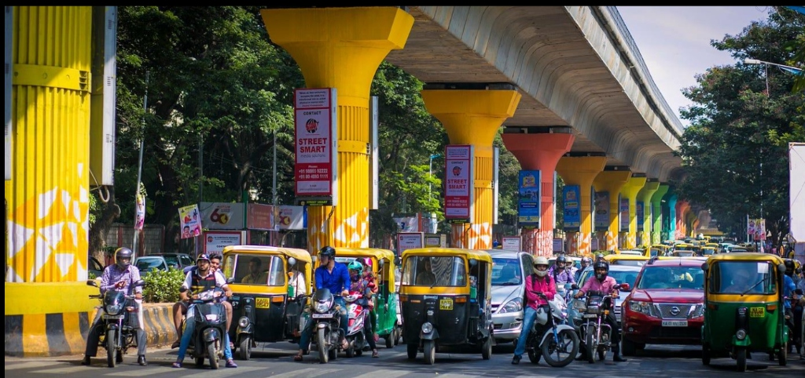

Civic Issue Management Platform
Better Cities Begin
With Being Heard.
Report. Track. Resolve.
The Problem
Reporting is only the first step.
Every day, civic problems go unresolved — not because no one reports them, but because reports get lost, duplicated, or deprioritized. Without a system to organize, prioritize, and track complaints, the gap between citizens and resolution keeps widening.

What Can You Report
Complaint Categories
Swipe or slide horizontally to browse all public infrastructure sectors.


How It Works
Three steps to resolution.
Report
Citizen reports a civic problem with details, location, and photographic evidence.
Prioritize
The system evaluates severity, report frequency, and waiting time to determine processing order.
Resolve
The appropriate department is assigned and the complaint is tracked until resolution.
City at a Glance
Under the Hood
Behind every complaint is a system built to keep things moving.
Priority Scheduling
Serious and frequently reported issues are processed earlier based on a computed priority score.
Multilevel Queue
Complaints are organized into priority levels — Critical, High, Normal, Low — for structured processing.
Aging
Long-pending complaints gradually receive higher priority so they are never permanently ignored.
Duplicate Detection
Multiple reports about the same civic problem are grouped together, amplifying their priority.
Status History
Every change in a complaint's lifecycle is recorded, creating a transparent and auditable trail.
Database Integrity
Relational structure with proper constraints ensures data consistency across all records.
Live Tracking
Every complaint tells a story.
Transparent, real-time status from submission to resolution.
Large pothole near Sector 15
Your city is listening.
Every report matters. Every resolution counts. Help build a better city, one complaint at a time.